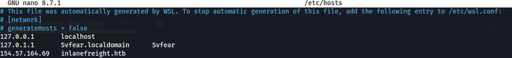
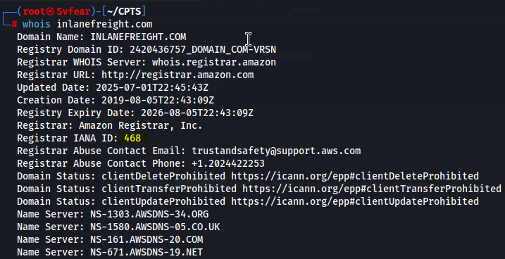
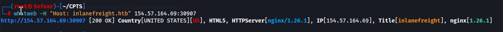
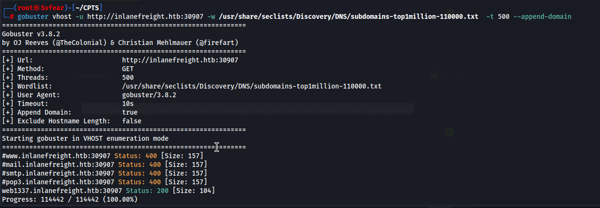
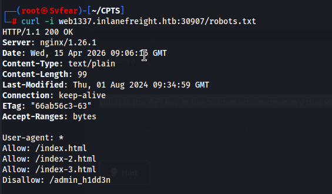
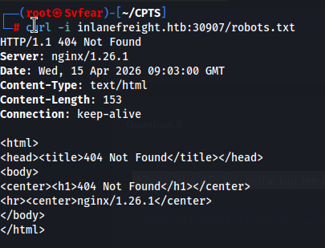
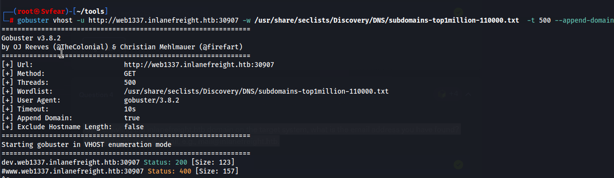
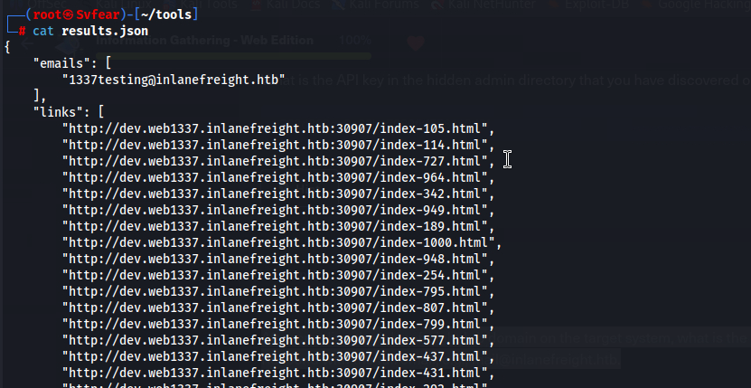
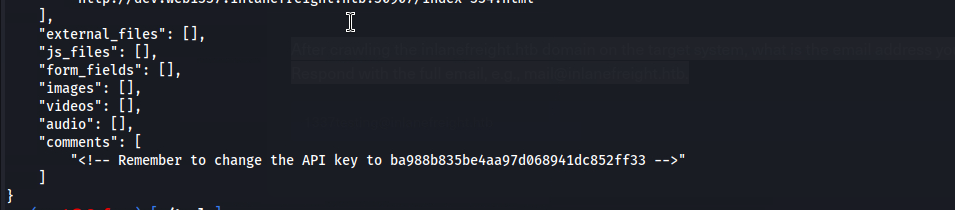

Every professional engagement begins with defining the scope. To interact with the target environment using domain names rather than raw IPs, I updated the local /etc/hosts file. This allows for proper virtual host resolution during the later stages of the attack.

# Command used:
echo "10.129.x.x inlanefreight.htb" | sudo tee -a /etc/hostsPassive reconnaissance began with a WHOIS lookup. The goal was to extract organizational data and registrar details. Specifically, I needed to identify the IANA ID, which provides insight into the domain's registrar and management history.
whois inlanefreight.htb
The IANA ID was successfully located within the registrar information block, completing the initial footprinting requirements.
To understand the attack surface, I performed technology fingerprinting using whatweb. Identifying the backend technologies helps in choosing the right exploits or discovery wordlists. The scan confirmed the target utilizes an nginx web server.

Standard web crawling on the main domain yielded limited results. I pivoted to Virtual Host brute-forcing to find subdomains that might be hosted on the same server but not indexed by public DNS. This led to the discovery of web1337.inlanefreight.htb.

Upon discovering the new subdomain, a manual inspection of the robots.txt file revealed a high-value hidden directory: /admin_h1dd3n/.

The final objective required a deeper dive to locate sensitive contact information. An initial crawl with ReconSpider.py on the web1337 subdomain came back empty, indicating that the target data was likely nested deeper within a dev environment.
python3 ReconSpider.py http://web1337.inlanefreight.htb:30907
I initiated a second round of fuzzing specifically targeting the web1337 subdomain. This revealed a secondary development layer: dev.web1337.inlanefreight.htb. Running the spider here successfully pulled the hidden data.


